Les Personnages de la Saga
Alliés, ennemis, dieux et mortels — tous ont croisé le chemin du Ghost of Sparta
Protagoniste Principal
KRATOS
Ancien général spartiate devenu le Fantôme de Sparte, Kratos a assassiné sa propre famille sous l'emprise d'Arès, puis massacré les dieux de l'Olympe un à un. Après avoir détruit la Grèce antique, il s'exile dans les terres nordiques où il tente de vivre en paix avec son fils Atreus — jusqu'à ce que les dieux nordiques brisent cette paix. Porteur des Lames du Chaos et de la Hache Léviathan, il est l'homme le plus dangereux des neuf royaumes.
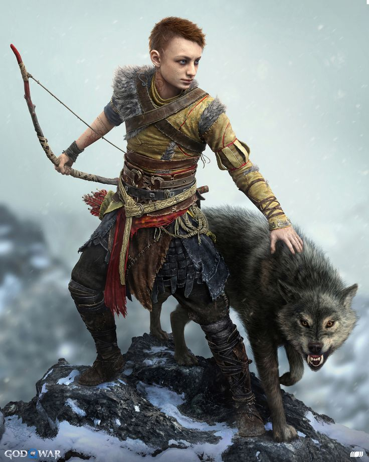
🏹Atreus
Ère Nordique
Fils de Kratos et de la géante Faye. Connu sous le nom de Loki dans la prophétie nordique, il accompagne son père tout au long de la saga nordique.
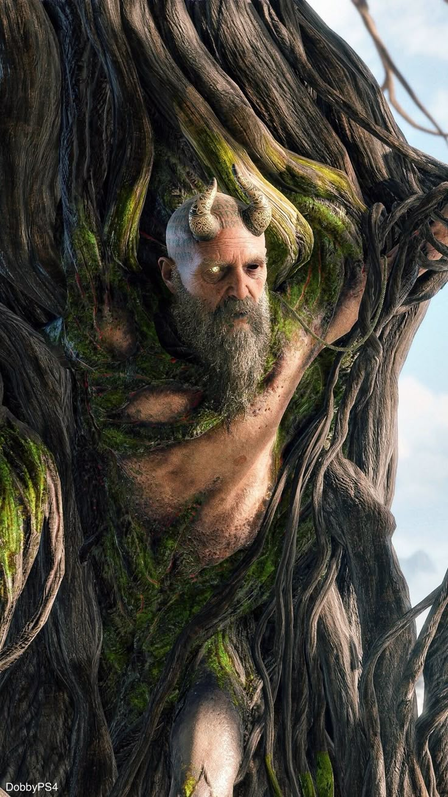
💀Mimir
Ère Nordique
L'homme le plus sage des neuf royaumes. Sa tête décapitée devient le compagnon et conseiller attitré de Kratos après qu'il le libère de la prison d'Odin.
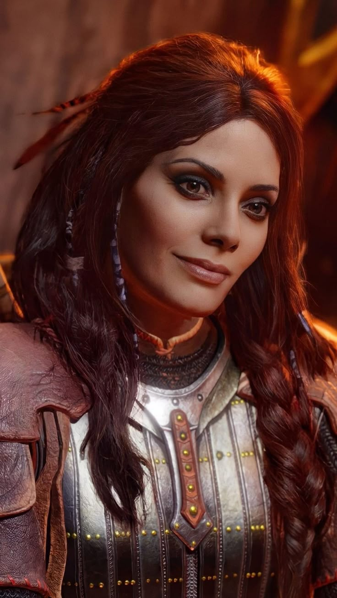
🌿Freya
Ère Nordique
Alliée dans God of War (2018), elle devient l'ennemie jurée de Kratos après la mort de Baldur, avant de finalement rejoindre sa cause dans Ragnarök.
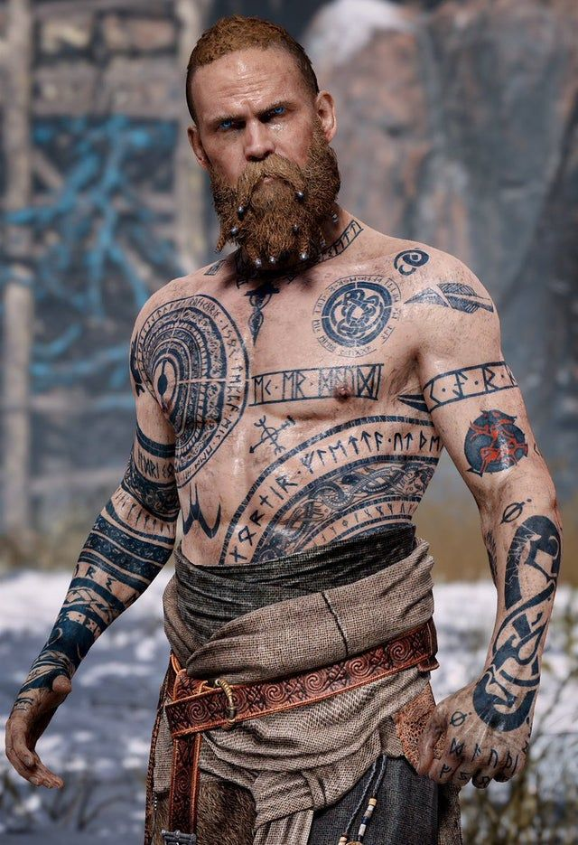
❄️Baldur
Ère Nordique — Antagoniste
Dieu de la lumière et fils de Freya, rendu insensible par un sortilège maternel. Il traque Kratos pour le compte d'Odin et l'affronte plusieurs fois avant leur duel final.
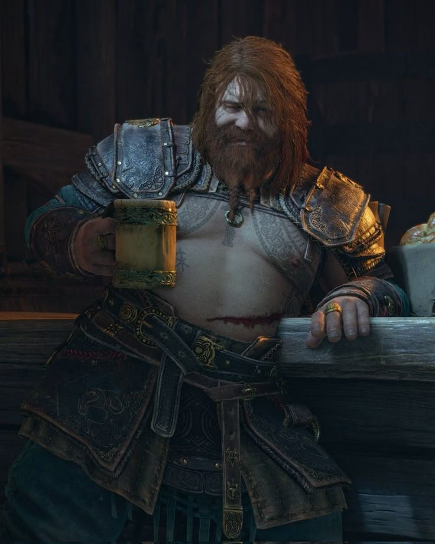
⚡Thor
Ère Nordique — Antagoniste
Dieu du tonnerre et fils d'Odin. Porteur du Mjölnir, il confronte Kratos au nom d'Odin dans Ragnarök, avant une fin tragique orchestrée par son propre père.
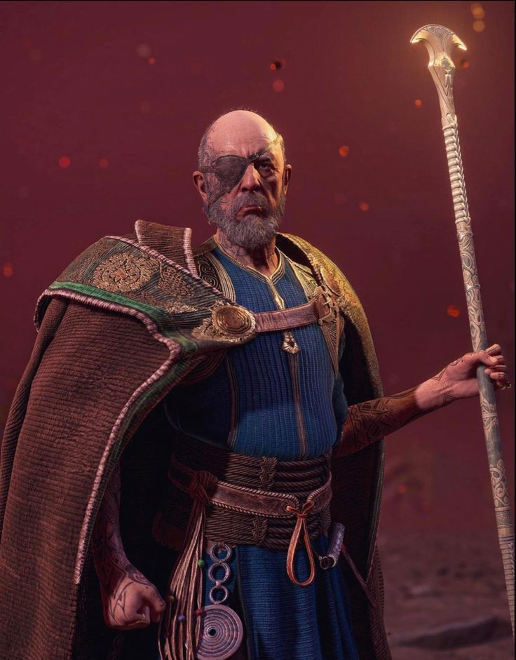
🦅Odin
Ère Nordique — Antagoniste Final
Le Père de Tout. Roi des Ases et véritable marionnettiste derrière le Ragnarök. Manipulateur et omniscient, il est le grand ennemi de la saga nordique.
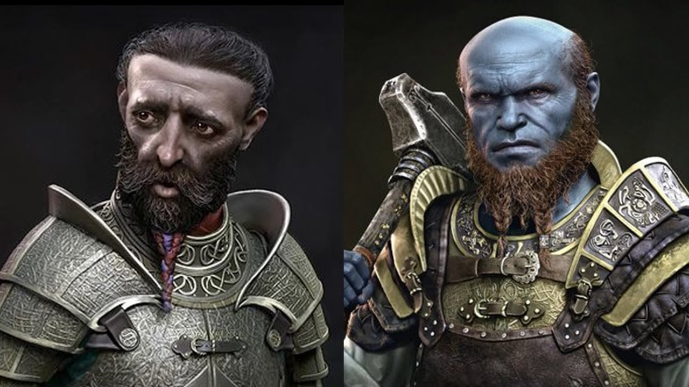
🔨Brok & Sindri
Ère Nordique
Les deux nains forgerons créateurs de la Hache Léviathan. Ils améliorent l'équipement de Kratos et rejoignent la résistance contre Odin dans Ragnarök.
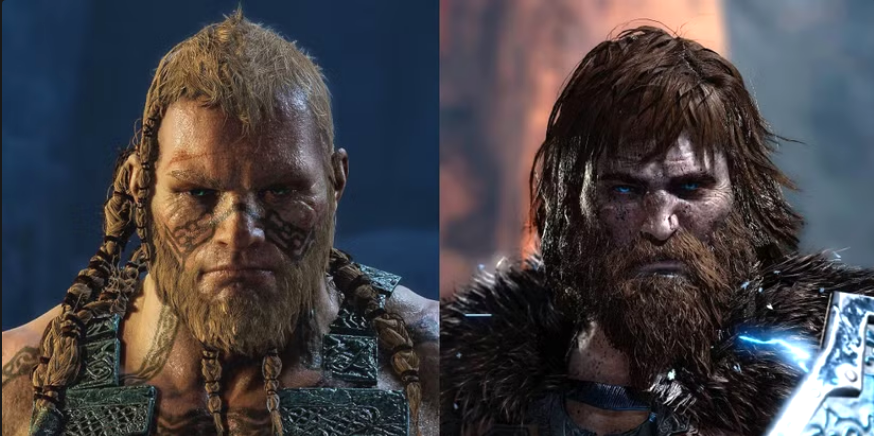
🪓Magni & Modi
Ère Nordique
Les fils de Thor chargés de capturer Kratos. Ils l'affrontent en duo dans un combat mémorable. Leur mort devastera Thor et scellera la rancœur d'Odin.
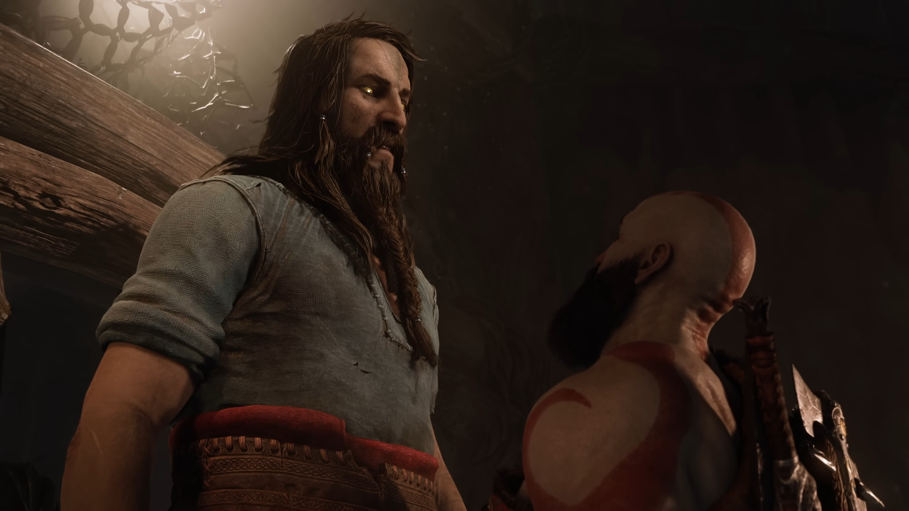
⚖️Týr
Ère Nordique
Dieu de la guerre nordique et symbole de paix entre royaumes. Retrouvé emprisonné dans Ragnarök — mais son identité cache un secret bouleversant lié à Odin.
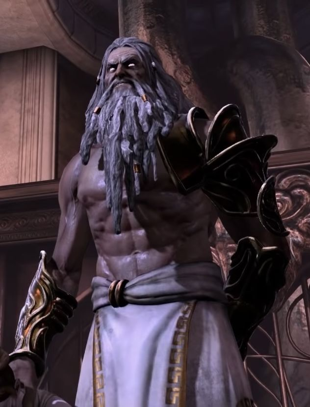
🌩️Zeus
Ère Grecque — Antagoniste Final
Roi de l'Olympe et père biologique de Kratos. Il le trahit par peur d'une prophétie. Kratos lui voue une vengeance absolue à travers toute la trilogie grecque.
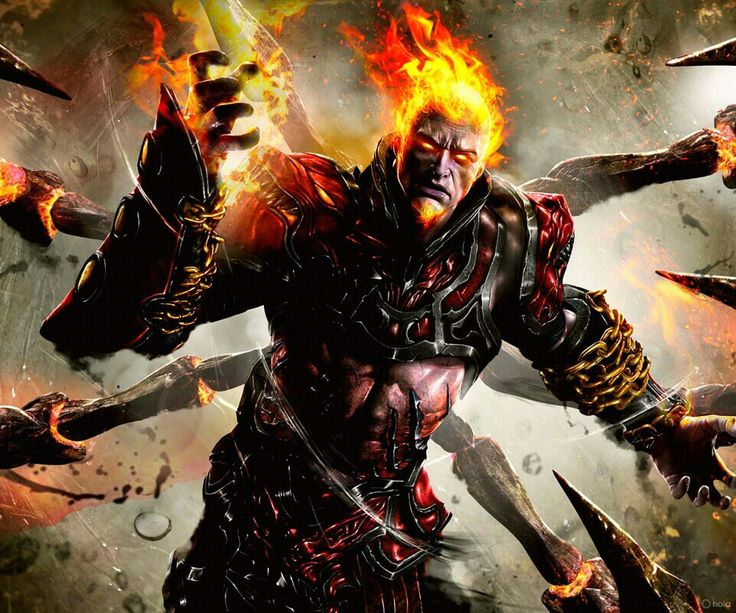
🔥Arès
Ère Grecque — Premier Antagoniste
Dieu de la guerre qui a manipulé Kratos pour qu'il tue sa propre famille. C'est pour se venger de lui que Kratos entreprend sa quête dans le premier God of War.
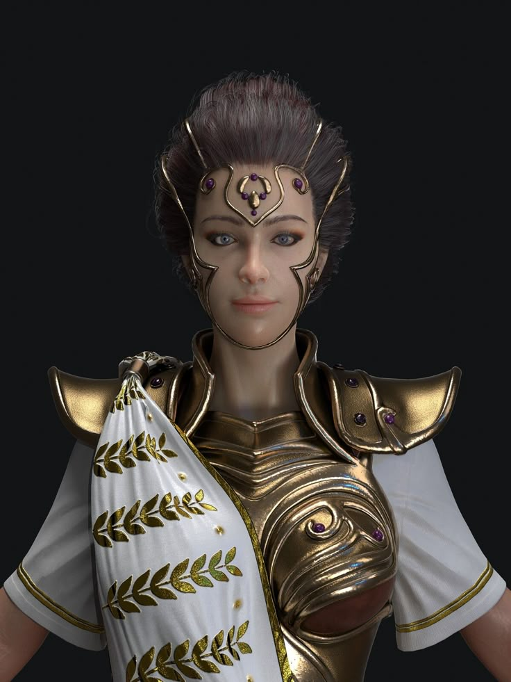
🦉Athéna
Ère Grecque — Alliée Ambiguë
Guide de Kratos dans l'ère grecque. Son véritable but est révélé dans God of War III : elle voulait utiliser Kratos pour s'emparer du pouvoir des dieux.
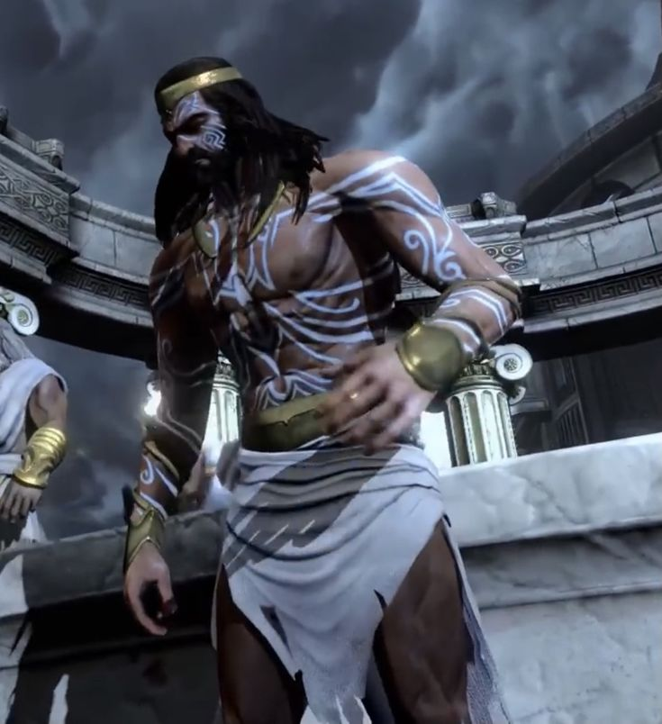
🌊Poséidon
Ère Grecque
Dieu des mers, premier Olympien affronté dans God of War III. Sa mort déclenche des inondations catastrophiques sur toute la Grèce.
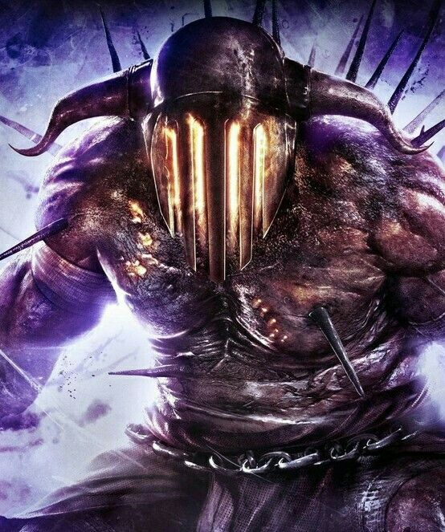
💀Hadès
Ère Grecque
Maître des Enfers. Kratos affronte le roi des morts dans son propre royaume et lui vole ses griffes divines, libérant toutes les âmes des défunts.
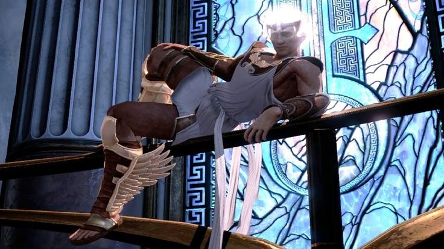
💨Hermès
Ère Grecque
Messager des dieux, arrogant et rapide. Kratos le pourchasse à travers l'Olympe pour lui dérober ses sandales ailées et leur vitesse divine.